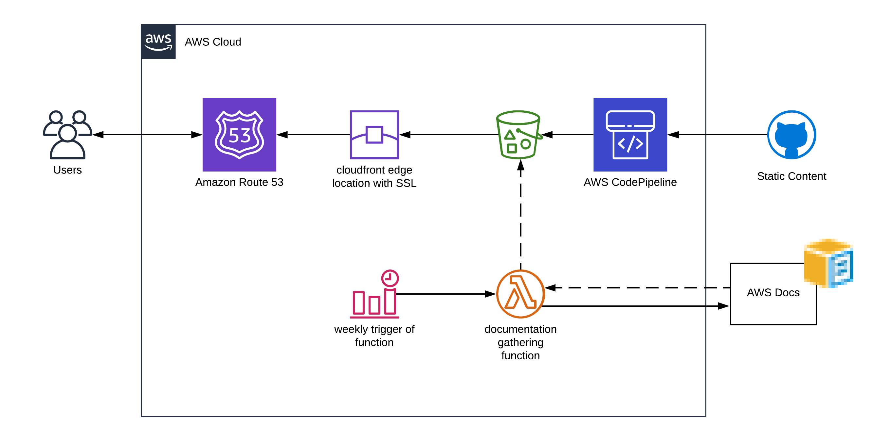

I recently posted an entry announcing www.aws-glossary.info. In this post I want to cover how it actually works.
Basic Architecture
The logical diagram below details the basic structure of the application. The core components are;
| Component | Purpose |
|---|---|
| Github | Static content stored in github |
| CodePipeline | On commit to the master branch of the github repo - UI components deployed to S3 |
| S3 | Static content for the application is stored in an S3 bucket configured for website hosting |
| CloudFront | Edge location storage, but more importantly, facilitates SSL |
| Route53 | Hosted zone for the aws-glossary.info domain - points to the CloudFront distribution |
| Lambda | Python lambda function to get the latest documentation data and store in a neat JSON file |
| CloudWatch Events | Used to trigger the lambda function |

User Interface
The user interface is using KnockoutJS to bind all the components together to dynamically filter the data downloaded in the service JSON file. KnockoutJS allows you to tag components as observable; for example, as you update the search text box, the collection behind the table is filtered appropriately.
Finally, for ease (and because I’m no good a UI design), I’ve used Bootstrap 4.0 to make the look and feel slick but easy for me.
Resources: